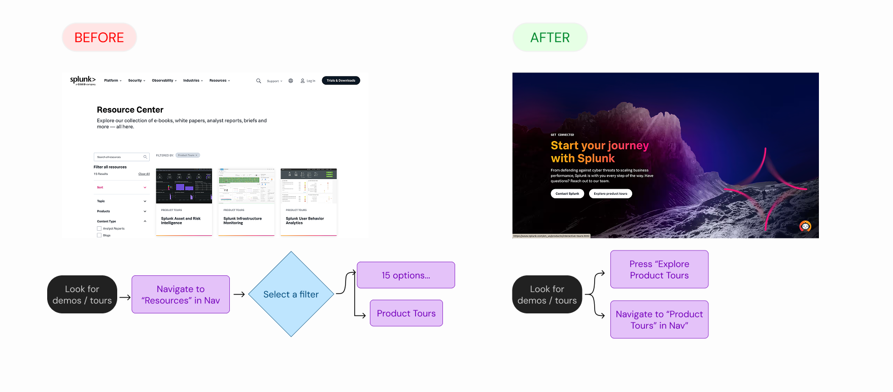
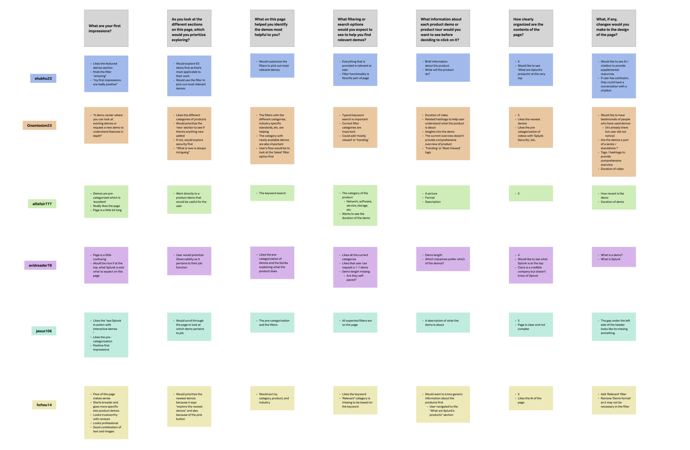

01Removed
Duration
Users wantedTime before committing
Demos were self-paced with no reliable duration, so I left it out rather than show a misleading number.
I joined Splunk’s Growth Marketing team right after Cisco’s acquisition. Alongside a heuristic audit of 8+ domains, I kept coming back to one problem: helping people find what they need. First as a shipped Demo Center, then as an AI concept that turns a copied code snippet into the right next step.
The audit
Cisco had just acquired Splunk, and the seams showed everywhere. Leadership knew it was fragmented. What the team needed was where the friction lived, and which of it mattered most.
The audit, explorable. I built this impact × effort matrix with Claude Code so stakeholders could explore it themselves. I defined the rubric and every placement; the model handled the build.
01
Dead ends with no way backError and empty states left users with no next step.02
The same story, three timesRedundant content across domains, with no clear canonical page.03
Navigation that changed per surfaceWhat users learned on Cisco broke on Splunk.04
Brand confusion at decision momentsTwo brands, two stories, right when users were deciding to trust.6
What happened next
I took the findings on a roadshow across the org, with views tailored to each team, and six sprint teams moved them into their planning. The highest-leverage thing I made all summer wasn’t a screen.
Findability, v1 · Shipped
Splunk’s demos were useful, but scattered and buried under Resources. I designed the Demo Center as a single front door: one IA, one component strategy, one copy hierarchy.
Before: a five-step filter maze
Buried under Resources, behind filters.
After: a two-step front door
Pick a category, pick a demo.

Before / after. The old Resource Center flow next to the new Demo Center.
I varied where filters, product categories, and demo content sat, then used stakeholder feedback to narrow to one direction.


Stakeholders said it worked for Splunk. I still needed to know if it worked for people trying to find a demo.

01
Give people somewhere to startUsers gravitated to the featured demo as an easy entry point.02
Time mattered before the clickUsers wanted to know how long a demo would take before committing.03
Categories made browsing easierPaths like Security and Observability got people there faster.Testing gave me clear signals, but the design also had to fit product constraints, content scale, and business priorities.
Time before committing
Demos were self-paced with no reliable duration, so I left it out rather than show a misleading number.
More ways to narrow
With a small library, filters added more interface than value. Categories did the work instead.
Giving one demo priority
Stakeholders didn’t want it at first, but testing showed users valued a clear place to start, so I kept it.
A simpler entry point, organized around product categories, with a featured demo to help people get started.
The shipped Demo Center. Designed during my internship and launched on splunk.com after I left.
Reflection
This internship taught me how to create momentum inside a large organization, including teaching a Figma Make workshop on the AI-assisted workflow I’d used all summer.
01
Clarity compounds.My highest-leverage work made the system legible: an audit six teams could plan from, and one front door for every demo. Next time, I’d look for that leverage earlier.02
Evidence moves decisions.Session recordings, usability tests, and competitor patterns beat any opinion. When I could show a user struggling, the debate ended.03
Name the tool, own the judgment.Claude Code built my audit matrix and Figma Make sped up explorations, but every rubric, placement, and final call was mine.